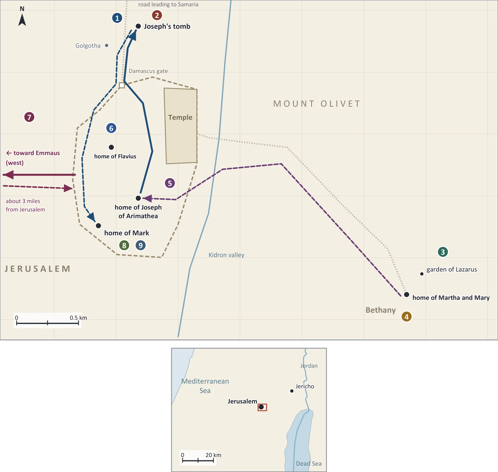
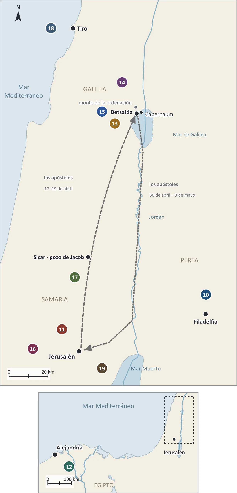

Parte VII La resurrección, las apariciones y lo que siguió
Documentos 189–196
Documento 189La Resurrecciónabril de 30 d. de J.C.
| Acontecimiento | El libro de Urantia | Biblia |
|---|---|---|
| (Introducción) | 189:0.1–3 | Ninguno |
| Después de la sepultura de Jesús, el jefe de los arcángeles convocó su consejo de la resurrección, pero hacia la medianoche concluyeron que las criaturas no podían ayudar a su Creador a volver a la vida. El Ajustador Personalizado de Jesús dijo a las huestes celestiales que Micael tenía poder para dar su vida y volver a tomarla. | ||
| 1. El Tránsito Morontial | 189:1.1–13 | Ninguno |
| A las tres y dos minutos de la madrugada del domingo 9 de abril del año 30 d. de J.C., la forma morontial resucitada y la personalidad de Jesús salieron de la tumba de José. Su cuerpo físico quedó allí, en sus envolturas de lino, y las piedras de la entrada y los sellos de Pilato no fueron tocados. Apareció como una personalidad morontial semejante a los ascendentes resucitados de los mundos de estancia. | ||
| 2. El Cuerpo Material de Jesús | 189:2.1–9 | Mt 28:2-4, 11-15 |
| El jefe de los arcángeles pidió a Gabriel el cuerpo mortal de Jesús y recibió el permiso, y las huestes celestiales lo disolvieron casi instantáneamente. Los seres intermedios secundarios hicieron rodar las piedras de la entrada de la tumba, y los guardias, aterrorizados, huyeron. Los dirigentes judíos sobornaron a los veinte guardias para que dijeran que los discípulos habían robado el cuerpo.Difiere de la BibliaMateo dice que un ángel del Señor descendió en medio de un terremoto y removió la piedra, mientras que El libro de Urantia atribuye esto a los seres intermedios secundarios; explica que la tumba estaba vacía porque el cuerpo fue disuelto, no resucitado. | ||
| 3. La Resurrección Dispensacional | 189:3.1–5 | Ninguno |
| Poco después de las cuatro y media de la madrugada del domingo, el Micael morontial ordenó a Gabriel que iniciara la lista de llamada de la resurrección planetaria. Los sobrevivientes dormidos de Urantia desde los días de Adán aparecieron entonces en las salas de resurrección de los mundos de estancia: la tercera resurrección dispensacional. | ||
| Mapa 37El día de la resurrección: apariciones en Jerusalén y BetaniaDomingo 9 de abril de 30 d. de J.C. | ||
| 4. El Descubrimiento de la Tumba VacíaMapa 37-① La tumba · a las cinco mujeres | 189:4.1–14 | Mt 28:1-10; Mr 16:1-11; Lc 24:1-11; Jn 20:1-2, 11-18 |
| Hacia las tres y media de la madrugada del domingo, María Magdalena y otras cuatro mujeres llegaron a la tumba con ungüentos y encontraron sólo los lienzos de la sepultura. Cuando un desconocido, a quien tomaron por el cuidador del jardín, dijo: «María», reconocieron al Maestro. Jesús les dijo que anunciaran a los apóstoles, y a Pedro, que había resucitado.Difiere de la BibliaLos Evangelios hacen que unos ángeles o un joven vestido de blanco anuncien la resurrección en la tumba, mientras que El libro de Urantia no tiene ningún anuncio angélico; Jesús mismo se apareció a las mujeres, cuyos nombres y número varían en los Evangelios, pero que él fija en cinco. | ||
| 5. Pedro y Juan Junto a la TumbaMapa 37-② La tumba · a María Magdalena | 189:5.1–5 | Lc 24:12; Jn 20:3-10 |
| Pedro y Juan corrieron a la tumba y la encontraron vacía, con los lienzos de la sepultura en orden. Pedro pensó que habían robado el cuerpo, pero Juan se preguntaba por qué los lienzos habían quedado intactos. Cuando se fueron, Jesús se apareció de nuevo a María Magdalena y le pidió que dijera a los apóstoles que él iría delante de ellos a Galilea.Difiere de la BibliaEl Evangelio de Juan dice que el otro discípulo vio y creyó, mientras que El libro de Urantia dice que ninguno de los dos apóstoles comprendió claramente lo que había sucedido, y que Jesús se apareció luego a María por segunda vez. | ||
Mapa 37El día de la resurrección: apariciones en Jerusalén y Betania
Domingo 9 de abril de 30 d. de J.C. · Documentos 189–191

- ①La tumba · a las cinco mujeresHacia las tres y media, las cinco mujeres de la casa de José salieron por la puerta de Damasco y llegaron ante la tumba vacía; Jesús, a quien María Magdalena tomó por el cuidador del jardín, les habló. Volvieron apresuradamente a la casa de los Marcos (línea discontinua). [189:4.2–13]
- ②La tumba · a María MagdalenaDespués de que Pedro y Juan vieran la tumba y se fueran, se apareció de nuevo a María Magdalena, que se había quedado allí. [189:5.1–5]
- ③Betania · el jardín de LázaroPoco después del mediodía, a Santiago, el hermano mayor de Jesús, que estaba de pie en el jardín de Lázaro ante la tumba vacía. María Magdalena también había venido allí. [190:2.2–3]
- ④Betania · la casa de Marta y MaríaPoco antes de las dos, a su familia terrenal y sus amigos, veinte en total; apareció en la puerta trasera abierta. [190:2.6]
- ⑤La casa de José de ArimateaHacia las cuatro y cuarto, a unas veinticinco mujeres creyentes. María Magdalena había vuelto de Betania unos minutos antes (línea discontinua). [190:2.7; 190:3.1]
- ⑥La casa de FlavioHacia las cuatro y media, a unos cuarenta creyentes griegos, aunque las puertas estaban bien cerradas. [190:4.1]
- ⑦En el camino a EmaúsUnos minutos antes de las cinco, a unos cinco kilómetros de Jerusalén, a los hermanos Cleofas y Jacobo. Emaús está a unos once kilómetros al oeste de Jerusalén. Volvieron apresuradamente a Jerusalén (línea discontinua). [190:5.1–7]
- ⑧El jardín de la casa de los Marcos · a PedroCerca de las ocho y media de la noche, a Simón Pedro en el jardín de la casa de los Marcos. [191:1.1–2]
- ⑨El aposento superior · a los diez apóstolesPoco después de las nueve, en medio de los diez apóstoles, en el aposento superior con todas las puertas atrancadas. Tomás no estaba allí. [191:0.1; 191:2.1–2]
Documento 190Las Apariciones Morontiales de Jesúsabril de 30 d. de J.C.
| Acontecimiento | El libro de Urantia | Biblia |
|---|---|---|
| (Introducción) | 190:0.1–5 | Ninguno |
| Jesús resucitado permaneció brevemente en Urantia para experimentar la carrera morontial por la que pasan los mortales de Satania en los mundos de estancia. Su cuerpo morontial no tenía sangre circulante ni tomaba alimento material, pero era real, de modo que los creyentes que lo vieron no fueron engañados por alucinaciones. | ||
| 1. Los Heraldos de la Resurrección | 190:1.1–10 | Ninguno |
| Al oír el informe de las mujeres, José y David Zebedeo inspeccionaron la tumba, pero a las siete y media el capitán de los guardias del templo retiró los lienzos de la sepultura. Cuando los apóstoles dudaron, David entregó la bolsa del dinero a Mateo y se fue; poco antes de las diez envió a sus veintiséis mensajeros con la noticia de la resurrección y disolvió el cuerpo de mensajeros. | ||
| 2. La Aparición de Jesús en BetaniaMapa 37-③ Betania · el jardín de LázaroMapa 37-④ Betania · la casa de Marta y MaríaMapa 37-⑤ La casa de José de Arimatea | 190:2.1–7 | Ninguno |
| Hacia el mediodía del domingo, en el jardín de Lázaro en Betania, Jesús hizo su tercera aparición, a su hermano mayor Santiago, llamándolo al servicio del reino. Poco antes de las dos se apareció en la casa de Marta y María a su familia terrenal y sus amigos, veinte en total, invitándolos a entrar en la comunión del Espíritu de la Verdad, y luego desapareció. | ||
| 3. En la Casa de José | 190:3.1–3 | Ninguno |
| Hacia las cuatro y cuarto de la tarde del domingo, Jesús hizo su quinta aparición, a unas veinticinco mujeres creyentes en la casa de José de Arimatea. Les dijo que en el reino no hay judío ni gentil, hombre ni mujer, y las envió a proclamar la buena nueva. Al difundirse la noticia, el sanedrín decidió expulsar de las sinagogas a todo el que hablara de la resurrección. | ||
| 4. La Aparición a los GriegosMapa 37-⑥ La casa de Flavio | 190:4.1–2 | Ninguno |
| Hacia las cuatro y media, aunque las puertas estaban bien cerradas, Jesús hizo su sexta aparición, a unos cuarenta creyentes griegos en la casa de Flavio. Les dijo que en el reino del Padre no habría judío ni gentil, y les encargó proclamar el evangelio de la salvación a todo el mundo. Los griegos permanecieron juntos durante toda la noche. | ||
| 5. La Caminata con los Dos HermanosMapa 37-⑦ En el camino a Emaús | 190:5.1–8 | Mr 16:12-13; Lc 24:13-35 |
| Unos minutos antes de las cinco de la tarde del domingo, Jesús hizo su séptima aparición, a los hermanos pastores Cleofas y Jacobo en el camino a Emaús, y les explicó las Escrituras. Cuando partió el pan en su casa, lo reconocieron, y él desapareció. Los hermanos volvieron apresuradamente a Jerusalén y se lo contaron a los apóstoles en el aposento superior.Difiere de la BibliaLucas nombra a Cleofas y a un discípulo sin nombre, mientras que El libro de Urantia los identifica como Cleofas y su hermano incrédulo Jacobo, pastores de Emaús; no contiene el informe de Lucas de que el Señor se había aparecido a Simón. | ||
Documento 191Las Apariciones a los Apóstoles y a Otros Líderesabril de 30 d. de J.C.
| Acontecimiento | El libro de Urantia | Biblia |
|---|---|---|
| (Introducción)Mapa 37-⑨ El aposento superior · a los diez apóstoles | 191:0.1–13 | Ninguno |
| El domingo de la resurrección, diez apóstoles permanecieron en el aposento superior tras las puertas atrancadas por temor a ser arrestados, mientras Tomás cavilaba a solas cerca de Betfagé. Juan sostenía firmemente que Jesús había resucitado, y Pedro oscilaba entre la fe y la duda. El Maestro demoró su primera aparición para que reflexionaran sobre sus palabras y para que Tomás pudiera estar con ellos. | ||
| 1. La Aparición a PedroMapa 37-⑧ El jardín de la casa de los Marcos · a Pedro | 191:1.1–5 | Ninguno |
| Hacia las ocho y media de la noche del domingo, Jesús hizo su octava aparición, a Pedro en el jardín de la casa de los Marcos, diciéndole que había sido perdonado incluso antes de pedirlo e invitándolo a prepararse para predicar el evangelio. Cuando Pedro declaró que había visto al Maestro, Andrés insinuó que Pedro ya antes había visto cosas que no eran reales. | ||
| 2. La Primera Aparición Ante los Apóstoles | 191:2.1–2 | Mr 16:14; Lc 24:36-40; Jn 20:19-23 |
| Poco después de las nueve de la noche del domingo, Jesús apareció en forma morontial en medio de los diez apóstoles en el aposento superior, aunque las puertas estaban atrancadas. Reprendió sus dudas, recordándoles que había predicho su muerte y su resurrección al tercer día, y les dijo que fueran a Galilea una vez que estuvieran todos juntos. Ésta fue su novena aparición.Difiere de la BibliaLucas y Juan dicen que Jesús mostró sus manos, sus pies y su costado y sopló sobre ellos para que recibieran el Espíritu Santo, mientras que El libro de Urantia no contiene esa escena y en su lugar les dice que vayan a Galilea cuando Tomás regrese. | ||
| 3. Con las Seres Morontiales | 191:3.1–4 | Ninguno |
| El lunes Jesús permaneció con más de un millón de directores morontiales y mortales en transición de los siete mundos de estancia. Hacia la medianoche su forma fue ajustada a la segunda etapa morontial, y avanzó etapa por etapa hasta alcanzar la ciudadanía de Jerusem el 7 de mayo. Así completó Micael su séptima experiencia de autootorgamiento en el universo. | ||
| Mapa 38Las apariciones morontiales, de la décima a la decimonovena11 de abril – 18 de mayo de 30 d. de J.C. | ||
| 4. La Décima Aparición (En Filadelfia)Mapa 38-⑩ Filadelfia | 191:4.1–7 | Ninguno |
| Poco después de las ocho del martes 11 de abril, Jesús hizo su décima aparición, a Abner, Lázaro y unos ciento cincuenta creyentes en la sinagoga de Filadelfia. Les dijo que amaran y sirvieran a todos los hombres como él los había amado, y que acogieran en su comunión a todos los obreros del evangelio. A la mañana siguiente salieron a proclamar la resurrección. | ||
| 5. La Segunda Aparición Ante los ApóstolesMapa 38-⑪ Jerusalén · la casa de los Marcos | 191:5.1–7 | Jn 20:24-29 |
| Tomás regresó el sábado 15 de abril, pero no quiso creer. A la noche siguiente, mientras decía que tenía que meter el dedo en las marcas de los clavos, Jesús apareció y dijo: «Así como el Padre me envió al mundo, así os envío yo». Tomás cayó de rodillas exclamando: «¡Yo creo!», y antes del amanecer los apóstoles partieron hacia Galilea.Difiere de la BibliaEl Evangelio de Juan hace que Jesús invite a Tomás a tocar las marcas de los clavos y su costado, mientras que El libro de Urantia dice que Jesús resucitó en forma morontial y no tenía marcas de clavos en las manos. | ||
| 6. La Aparición en AlejandríaMapa 38-⑫ Alejandría (vista general) | 191:6.1–4 | Ninguno |
| Hacia las ocho y media de la noche del martes 18 de abril, Jesús hizo su duodécima aparición, a Rodán y a unos ochenta creyentes en Alejandría, justo cuando Natán, el mensajero de David, terminaba de informar sobre la crucifixión. Jesús les dijo que el evangelio pertenece a todos los hombres y que el Espíritu de la Verdad vendría pronto. | ||
Mapa 38Las apariciones morontiales, de la décima a la decimonovena
11 de abril – 18 de mayo de 30 d. de J.C. · Documentos 191–193

- ⑩FiladelfiaPoco después de las ocho del martes 11 de abril, a Abner, Lázaro y unos ciento cincuenta de sus asociados en la sinagoga. [191:4.1]
- ⑪Jerusalén · la casa de los MarcosEl domingo 16 de abril por la noche, a los once apóstoles, ya con Tomás entre ellos. Muy temprano a la mañana siguiente los apóstoles partieron hacia Galilea. [191:5.1–7]
- ⑫Alejandría (vista general)El martes 18 de abril por la noche, hacia las ocho y media, a Rodán y a unos ochenta creyentes más. [191:6.1]
- ⑬La orilla en BetsaidaHacia las seis del viernes 21 de abril, a los diez apóstoles cuando su barca se acercaba a la orilla después de una noche de pesca. La primera aparición en Galilea. [192:1.1–2]
- ⑭La colina cerca de CapernaumAl mediodía del sábado 22 de abril, a los once apóstoles en el mismo monte donde los había separado como apóstoles. [192:3.1]
- ⑮BetsaidaEl sábado 29 de abril, a las tres, a más de quinientos creyentes reunidos para oír predicar a Pedro. [192:4.2–3]
- ⑯Jerusalén · el patio de NicodemoEl viernes 5 de mayo, hacia las nueve de la noche, a los once apóstoles, al cuerpo de mujeres y a unos cincuenta discípulos destacados más. [193:0.1]
- ⑰Cerca del pozo de Jacob, en SicarHacia las cuatro de la tarde del sábado 13 de mayo, a Nalda y a unos setenta y cinco creyentes samaritanos. [193:1.1–3]
- ⑱TiroEl martes 16 de mayo, poco antes de las nueve de la noche, a unos creyentes que estaban a punto de dispersarse. [193:2.1]
- ⑲Jerusalén · última aparición y despedidaTemprano en la mañana del jueves 18 de mayo, a los once apóstoles en el aposento superior de la casa de María Marcos; casi a las siete y media, en la ladera occidental del Monte de los Olivos, se despidió y desapareció de su vista. [193:3.1; 193:5.1–3]
Documento 192Las Apariciones en Galileaabril de 30 d. de J.C.
| Acontecimiento | El libro de Urantia | Biblia |
|---|---|---|
| (Introducción) | 192:0.1–5 | Ninguno |
| Con los apóstoles escondidos, los dirigentes judíos se calmaron, creyendo que el movimiento había sido suprimido. Desde entonces Pedro fue, por consentimiento común, el jefe del cuerpo apostólico, y Matías, elegido más tarde en lugar de Judas, llegó a ser el tesorero. Temprano el lunes, los apóstoles partieron hacia Galilea con Juan Marcos y llegaron a Betsaida a última hora de la noche del miércoles. | ||
| 1. La Aparición Junto al LagoMapa 38-⑬ La orilla en Betsaida | 192:1.1–11 | Jn 21:1-14 |
| El viernes 21 de abril por la mañana, después de una noche de pesca infructuosa, un hombre en la playa dijo a diez apóstoles que echaran la red al lado derecho, y ésta se llenó. Cuando Juan reconoció al Maestro, Pedro se lanzó al agua. Contaron 153 peces grandes, y Jesús desayunó con ellos y conversó más de una hora.Difiere de la BibliaEl Evangelio de Juan presenta esto como un milagro, mientras que El libro de Urantia lo atribuye sólo al conocimiento previo del Maestro sobre dónde estaban los peces; Juan Marcos preparó los peces, y Simón el Zelote estaba ausente, pues se había ido a su casa. | ||
| 2. Las Conversaciones con los Apóstoles de Dos en Dos | 192:2.1–14 | Jn 21:15-24 |
| Después del desayuno, Jesús caminó por la playa con los apóstoles de dos en dos. A Juan le dijo que amara a los hombres, y tres veces le preguntó a Pedro si lo amaba, pidiéndole que apacentara sus ovejas. Con las demás parejas habló de la confianza, el servicio, la obediencia y la fe, y luego dijo que se reuniría con ellos al día siguiente en el monte de su ordenación.Difiere de la BibliaEl Evangelio de Juan relata sólo el diálogo con Pedro y una predicción de su muerte, mientras que El libro de Urantia dice que Jesús habló con todos los apóstoles por parejas y no contiene ninguna predicción de la muerte de Pedro. | ||
| 3. En el Monte de la OrdenaciónMapa 38-⑭ La colina cerca de Capernaum | 192:3.1–3 | Mt 28:16-20 |
| Al mediodía del sábado 22 de abril, Jesús hizo su decimocuarta aparición, a los once apóstoles en la colina cerca de Capernaum donde los había ordenado. Arrodillados en círculo a su alrededor, le oyeron repetir sus encargos y volver a representar la ordenación, y él oró con palabras de poder. Después nadie lo vio durante una semana entera.Difiere de la BibliaMateo registra en el monte un mandato de hacer discípulos a todas las naciones, bautizándolos en el nombre del Padre, del Hijo y del Espíritu Santo, mientras que El libro de Urantia relata sólo la nueva representación de la ordenación y la oración, sin tal mandato. | ||
| 4. La Reunión Junto al LagoMapa 38-⑮ Betsaida | 192:4.1–8 | Ninguno |
| A las tres del sábado 29 de abril, más de quinientos creyentes en Betsaida oyeron el primer sermón público de Pedro desde la resurrección, y cuando terminaba, Jesús hizo su decimoquinta aparición. De vuelta en Jerusalén, los apóstoles en el aposento superior comenzaron a proclamar la resurrección en lugar del evangelio del reino. | ||
Documento 193Las Apariciones Finales y la Ascensiónmayo de 30 d. de J.C.
| Acontecimiento | El libro de Urantia | Biblia |
|---|---|---|
| (Introducción)Mapa 38-⑯ Jerusalén · el patio de Nicodemo | 193:0.1–6 | Ninguno |
| Hacia las nueve de la noche del viernes 5 de mayo, Jesús hizo su decimosexta aparición, en el patio de Nicodemo, a los once, al cuerpo de mujeres y a unos cincuenta discípulos. Dijo que su resurrección no cambiaba su mensaje; la filiación con Dios por la fe sigue siendo la verdad salvadora. Les dijo que permanecieran en Jerusalén. | ||
| 1. La Aparición en SicarMapa 38-⑰ Cerca del pozo de Jacob, en Sicar | 193:1.1–3 | Ninguno |
| Hacia las cuatro de la tarde del sábado 13 de mayo, Jesús hizo su decimoséptima aparición, a Nalda y a unos setenta y cinco creyentes samaritanos cerca del pozo de Jacob en Sicar. Enseñó que la salvación es un don gratuito de Dios que se recibe por la fe, pero que debe ir seguida de los frutos de la vida del espíritu, y les dijo que amaran y sirvieran a sus hermanos con afecto familiar. | ||
| 2. La Aparición en FeniciaMapa 38-⑱ Tiro | 193:2.1–3 | Ninguno |
| El martes 16 de mayo por la noche, cuando se disolvía una reunión de creyentes en Tiro, Jesús hizo su decimoctava aparición. Enseñó que la resurrección de los muertos no es el evangelio en sí, y que los nacidos del espíritu deben dar sus frutos, como el servicio amoroso. La noticia se difundió hasta Sidón e incluso Antioquía. | ||
| 3. La Última Aparición en JerusalénMapa 38-⑲ Jerusalén · última aparición y despedida | 193:3.1–3 | Lc 24:44-49 |
| Temprano en la mañana del jueves 18 de mayo, Jesús se apareció por última vez a los once en el aposento superior y les dijo que permanecieran en Jerusalén hasta recibir el Espíritu de la Verdad. Cuando Simón el Zelote preguntó por la restauración del reino, corrigió la idea de un reino material y, poniendo a Judas como ejemplo, los instó a confiar unos en otros.Difiere de la BibliaLucas hace que Jesús abra las Escrituras sobre el sufrimiento de Cristo y la predicación del arrepentimiento para el perdón, mientras que El libro de Urantia registra su respuesta a Simón el Zelote y su llamado a la confianza mutua, citando el aislamiento de Judas. | ||
| 4. Las Causas de la Caída de Judas | 193:4.1–14 | Ninguno |
| A la luz de la despedida del Maestro, el narrador examina por qué cayó Judas. Era una personalidad aislada que no quería confiarse a sus compañeros, no creció en el amor ni en la gracia, y culpaba a los demás de sus decepciones mientras alimentaba rencores. Tomás y Natanael, que tenían tendencias similares, aprendieron a confiar más en sus hermanos. | ||
| 5. La Ascensión del Maestro | 193:5.1–5 | Mr 16:19-20; Lc 24:50-53 |
| Casi a las siete y media de la mañana del jueves 18 de mayo, Jesús llegó con los once a la ladera occidental del Monte de los Olivos. Les mandó predicar el evangelio hasta los confines del mundo cuando viniera el Espíritu de la Verdad, y amar y servir a los hombres; hacia las ocho menos cuarto desapareció y regresó por vía de Jerusem y Edentia a Salvington.Difiere de la BibliaLucas dice que fue llevado al cielo mientras los bendecía cerca de Betania, mientras que El libro de Urantia dice que en la ladera occidental del Monte de los Olivos simplemente desapareció de su vista, como lo había hecho muchas veces durante los cuarenta días. | ||
| 6. Pedro Convoca Una Reunión | 193:6.1–6 | Hch 1:12-26 |
| Por indicación de Pedro, a las diez y media se habían reunido en la casa de los Marcos ciento veinte discípulos, entre ellos María, la madre de Jesús, y su hermano Santiago, y Pedro relató la despedida y la ascensión. En la planta baja los once echaron suertes, y Matías fue elegido en lugar de Judas. Más tarde Natanael y otros se retiraron, dejando a seis apóstoles en la proclamación de Jerusalén.Difiere de la BibliaHechos dice que Pedro citó los Salmos sobre el fin de Judas y que todos oraron antes de echar suertes, mientras que El libro de Urantia dice que los once bajaron a la planta baja y echaron suertes por su cuenta. | ||
Documento 194El Advenimiento del Espíritu de la Verdadmayo de 30 d. de J.C.
| Acontecimiento | El libro de Urantia | Biblia |
|---|---|---|
| El derramamiento del Espíritu de la Verdad | 194:0.1–7 | Hch 2:1-4 |
| Hacia la una del día de la ascensión, mientras los ciento veinte oraban en la casa de los Marcos, se dieron cuenta de una extraña presencia en la sala y sintieron gozo y confianza espirituales. Pedro declaró que éste debía ser el prometido Espíritu de la Verdad y propuso ir al templo. Pero cayeron en predicar al Señor resucitado en lugar de la paternidad y la filiación.Difiere de la BibliaHechos describe un viento recio que soplaba, lenguas como de fuego y el hablar en otras lenguas, mientras que El libro de Urantia dice que quienes oraban en silencio sólo percibieron una presencia en la sala y un gozo interior. | ||
| 1. El Sermón de Pentecostés | 194:1.1–5 | Hch 2:5-42 |
| Hacia las dos del día de Pentecostés, Pedro hizo un llamamiento apasionado en el mismo lugar donde el Maestro había enseñado por última vez en el templo. Seis apóstoles predicaron al Mesías resucitado durante más de una hora y media en griego, hebreo y arameo, y hacia las cuatro y media más de dos mil nuevos creyentes fueron bautizados en el estanque de Siloé.Difiere de la BibliaHechos cuenta que cada oyente entendía en su propia lengua y que hubo tres mil conversos, mientras que El libro de Urantia dice que los apóstoles hablaron idiomas que conocían y que más de dos mil fueron bautizados en Siloé. | ||
| 2. El Significado de Pentecostés | 194:2.1–20 | Ninguno |
| El Espíritu de la Verdad, enviado en lugar de Jesús, vuelve a exponer su mensaje para cada nueva generación, impide que los creyentes se sientan huérfanos y los hace conscientes no de sí mismo, sino de Micael. Desde su otorgamiento, el hombre ha recibido una triple dote espiritual: el Ajustador del Pensamiento, el Espíritu de la Verdad y el Espíritu Santo. | ||
| 3. Lo Que Ocurrió en Pentecostés | 194:3.1–20 | Ninguno |
| El Espíritu de la Verdad enseña el amor del Padre y la misericordia del Hijo, y revela al Hijo Creador dentro del corazón. Pentecostés liberó la religión de Jesús de las ataduras nacionales y raciales, de los rituales y los lugares sagrados, y de la fuerza física, y las mujeres quedaron en igualdad con los hombres. El espíritu fue dado a todos los creyentes sinceros. | ||
| 4. Los Comienzos de la Iglesia Cristiana | 194:4.1–13 | Hch 7:54-60 |
| Después de Pentecostés, los apóstoles predicaron al Cristo resucitado y su regreso en lugar del evangelio del reino. Los primeros creyentes compartían sus bienes, bautizaban en el nombre de Jesús y, gracias al consejo de Gamaliel, gozaron de una temporada de paz. Pero después de la muerte de Esteban estalló la persecución, que dispersó a los creyentes por todo el imperio. | ||
| Esteban, el primer mártir | 194:4.12 | Hch 7:54-60 |
| Esteban, dirigente de los creyentes griegos de Jerusalén, llegó a ser el primer mártir de la nueva fe. Los creyentes comprendieron entonces que ya no podían continuar como una secta dentro del judaísmo, y en menos de un mes se organizó la iglesia de Jerusalén bajo la dirección de Pedro, con Santiago, el hermano de Jesús, como su jefe titular.Difiere de la BibliaHechos cuenta la visión de Esteban de los cielos abiertos y del Hijo del Hombre, y presenta a Saulo, mientras que El libro de Urantia dice que fue lapidado sin juicio durante un sermón, lo cual condujo directamente a la organización de la iglesia. | ||
Documento 195Después de Pentecostés
| Acontecimiento | El libro de Urantia | Biblia |
|---|---|---|
| (Introducción) | 195:0.1–18 | Ninguno |
| Después de Pentecostés, Pedro se convirtió en el verdadero fundador de la iglesia cristiana, Pablo llevó su mensaje a los gentiles, y los creyentes griegos lo difundieron por el Imperio romano. El cristianismo triunfó sobre las religiones rivales mediante la organización, la helenización y los compromisos con el mitraismo y el paganismo. | ||
| 1. La Influencia de los Griegos | 195:1.1–11 | Ninguno |
| La helenización del cristianismo comenzó en serio cuando Pablo habló en el Areópago de Atenas sobre el Dios Desconocido. La libertad intelectual griega se unió a la libertad espiritual de Jesús para formar una carta de la libertad humana. Los griegos que buscaban un solo Dios abrazaron el cristianismo. | ||
| 2. La Influencia Romana | 195:2.1–9 | Ninguno |
| Roma aportó a Occidente la tolerancia hacia otros idiomas, pueblos y religiones; las primeras persecuciones surgieron porque la palabra «reino» se malinterpretó como una rivalidad política. Los romanos, honrados y capaces de gobernarse a sí mismos, aceptaron el cristianismo como una filosofía moral, y el estoicismo y la creencia griega en la inmortalidad también contribuyeron a preparar su aceptación. | ||
| 3. Bajo el Imperio Romano | 195:3.1–11 | Ninguno |
| Roma proporcionó la unidad política, Grecia la unidad cultural y el cristianismo la unidad religiosa. Lo que dio al cristianismo su mayor poder fue la manera en que los creyentes vivían vidas de servicio e incluso morían por su fe bajo la persecución. Sin embargo, el cristianismo no pudo detener la decadencia moral de Roma ni el derrumbe del imperio. | ||
| 4. La Edad de las Tinieblas en Europa | 195:4.1–5 | Ninguno |
| En la edad oscura de Europa, la iglesia, ligada a la sociedad y la política, compartió su decadencia, y la religión se volvió monástica, ascética y legalizada. El individuo casi se perdió ante la autoridad y la tradición de la iglesia, y surgió la idea de buscar la intercesión de los santos. Aun así, el cristianismo sobrevivió con su influencia moral y revivió en muchas sectas después del Renacimiento. | ||
| 5. El Problema Moderno | 195:5.1–14 | Ninguno |
| Para resolver los problemas del siglo veinte, los hombres deben buscar primero las realidades del cielo. La religión es una experiencia personal y espiritual, distinta de la lógica, la apreciación estética, la ética e incluso el sentido moral, y culmina en la adoración. Jesús siguió el método de la experiencia, y el amor es la guía hacia la verdadera perspicacia. | ||
| 6. El Materialismo | 195:6.1–17 | Ninguno |
| Los científicos han sumido involuntariamente a la humanidad en un pánico materialista, pero la religión de Jesús nunca ha quebrado. La ciencia es una experiencia cuantitativa y la religión una experiencia cualitativa, de modo que la verdadera religión no puede reñir con la ciencia. Los conceptos de verdad, belleza y bondad no son inherentes a la física ni a la química, y una máquina no puede conocer la verdad. | ||
| 7. La Vulnerabilidad del Materialismo | 195:7.1–23 | Ninguno |
| Si el universo fuera sólo material y el hombre sólo una máquina, el hombre nunca podría reconocerse a sí mismo como una máquina. La mente misma del científico que construye una filosofía mecanicista demuestra que es supermaterial. El científico, no la ciencia; el artista, no el arte; y el religioso, no la religión, demuestran respectivamente el universo, el mundo morontial y la realidad espiritual. | ||
| 8. El Totalitarismo Secular | 195:8.1–13 | Ninguno |
| El secularismo moderno nació de la ciencia sin Dios como padre y de la iglesia totalitaria medieval como madre. El secularismo rompió las cadenas de la iglesia, pero entrega al hombre a la esclavitud del estado totalitario, y la hermandad de los hombres no puede construirse ignorando a Dios. Las guerras del primer tercio del siglo veinte son sólo el comienzo de esa cosecha. | ||
| 9. El Problema del Cristianismo | 195:9.1–11 | Ninguno |
| El cristianismo paganizado y socializado necesita un nuevo contacto con las enseñanzas sin compromisos de Jesús, y la religión necesita nuevos líderes espirituales que dependan únicamente de Jesús y de sus enseñanzas. Los hombres modernos temen que la religión de Jesús pueda dominarlos y transformarlos, y la mayoría de las personas experimenta la religión de segunda mano, a través de sus maestros. | ||
| 10. El Futuro | 195:10.1–21 | Ninguno |
| Lo que el mundo necesita ahora más que nada es a Jesús, visto viviendo de nuevo en la experiencia de mortales nacidos del espíritu. La verdadera iglesia, la hermandad de Jesús, es invisible y espiritual. La esperanza del cristianismo reside en aprender de nuevo el evangelio de la paternidad de Dios y la hermandad de los hombres. | ||
Documento 196La Fe de Jesús
| Acontecimiento | El libro de Urantia | Biblia |
|---|---|---|
| (Introducción) | 196:0.1–14 | Ninguno |
| Jesús gozaba de una fe sublime y total en Dios, una fe personal y espiritual nacida del Ajustador residente. Su fe tenía la confianza de un niño, pero no era infantil ni fanática. No pidió a sus discípulos que creyeran en él, sino más bien que creyeran con él. | ||
| 1. Jesús — El Hombre | 196:1.1–13 | Ninguno |
| Por grande que sea la soberanía de Micael, no se debe quitar a los hombres el Jesús humano; él fue el religioso más verdadero que jamás vivió en Urantia. Seguir a Jesús no es imitar su vida exterior, sino compartir su fe. Ascendió de lo humano a lo divino a través de siete etapas. | ||
| 2. La Religión de Jesús | 196:2.1–11 | Ninguno |
| El evangelio del reino se basa en la experiencia religiosa de Jesús de Galilea, mientras que el cristianismo se basa casi por completo en la experiencia de Pablo. Jesús fundó una religión de hacer la voluntad de Dios y servir a la hermandad; Pablo fundó una de adoración del Cristo glorificado. Jesús veía a la mayoría de los hombres como débiles más que como malvados, y sin embargo todos eran hijos de Dios. | ||
| 3. La Supremacía de la Religión | 196:3.1–35 | Ninguno |
| La experiencia religiosa personal y espiritual es un solvente eficaz de la mayoría de las dificultades mortales. Las evidencias del Ajustador residente son el amor, la sabiduría y la adoración. Los hebreos tenían una religión de sublimidad moral y los griegos una religión de la belleza, pero Jesús reveló y ejemplificó una religión de amor. | ||
Los hechos de Jesús en El libro de Urantia — El Nuevo Testamento y El libro de Urantia